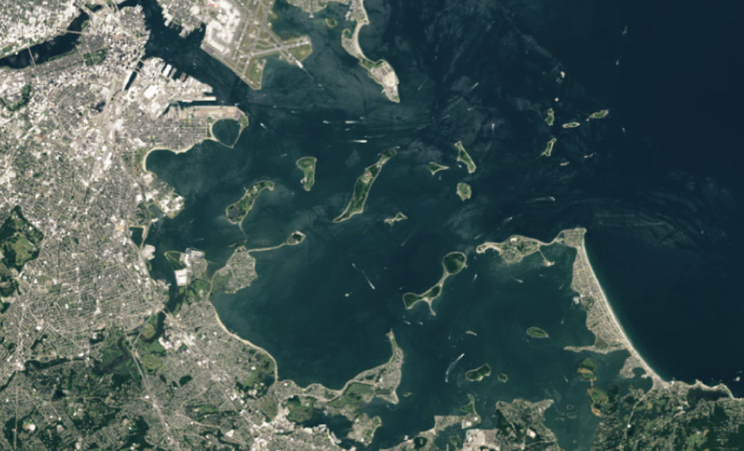
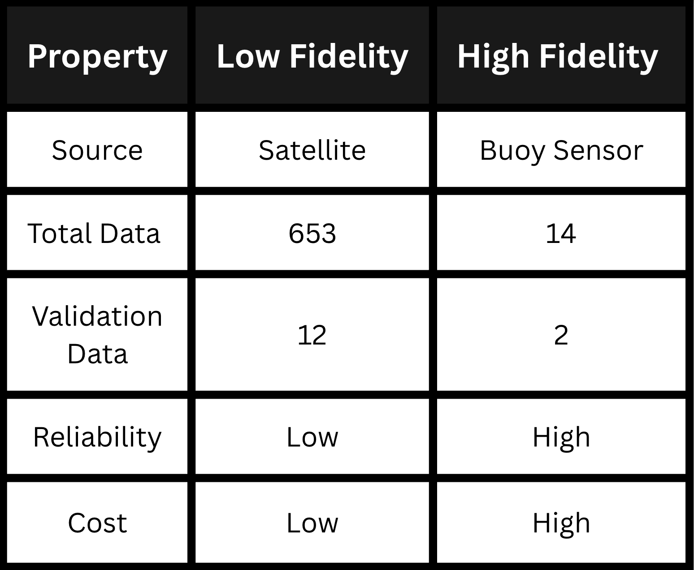
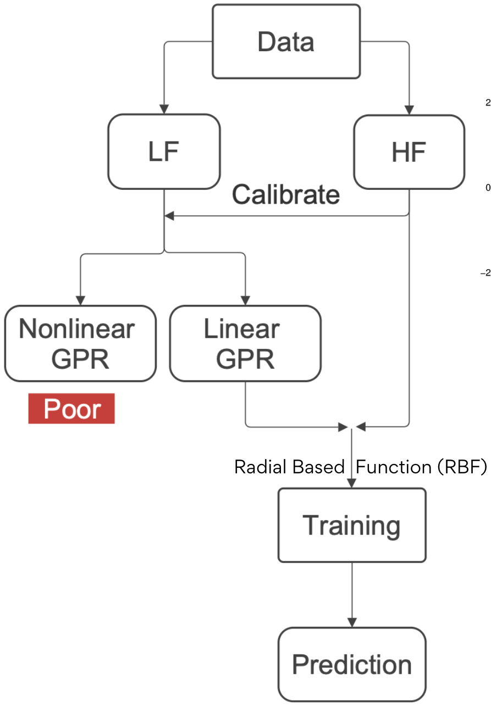
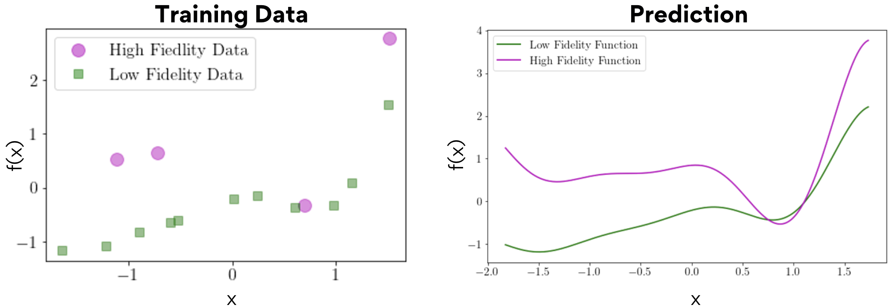
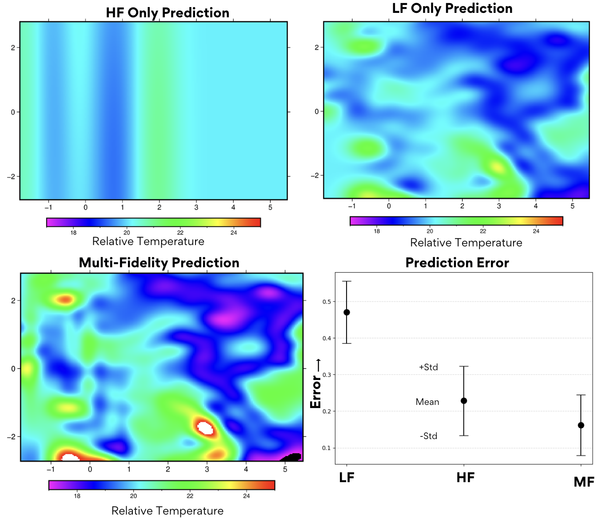
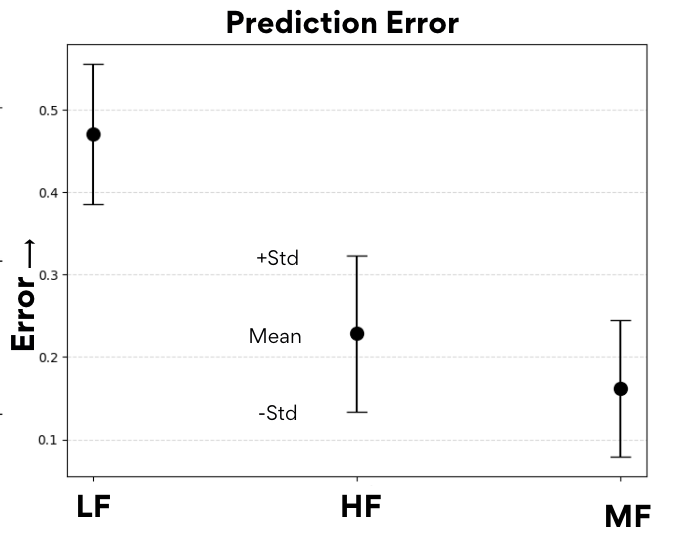
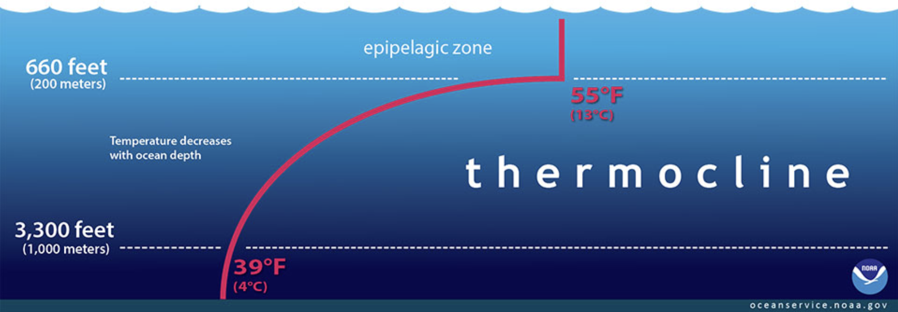

Multi-fidelity Gaussian Process Regression combining satellite and sensor data
We developed a multi-fidelity Gaussian Process Regression model to predict Sea Surface Temperature (SST) in Boston Harbor by combining abundant low-fidelity satellite data with sparse high-fidelity buoy sensors.
Boston Harbor is undergoing rapid ecological and industrial change driven by urban development and climate change. Accurate SST prediction is crucial for:

Boston Harbor study regionSatellite measurements
Buoy sensors

Comparison of low-fidelity satellite and high-fidelity buoy sensor dataCalibrate LF satellite data using HF buoy points
Train multi-fidelity GPR on combined dataset
Validate using leave-one-out cross-validation

Multi-fidelity GPR workflow: LF data provides patterns, HF data calibrates scale
Analogy: LF data shows right patterns but wrong scale; HF points calibrate to correct scaleMulti-fidelity GPR significantly outperformed single-fidelity models, reducing prediction error while providing reliable uncertainty estimates.
Successfully combined satellite coverage (653 points) with sensor accuracy (12 points) to predict temperatures across entire harbor.
Linear GPR preferred over nonlinear due to limited HF data points—nonlinear models require more training data to avoid overfitting.

Prediction error comparison: Multi-fidelity (MF) vs High-fidelity only (HF) vs Low-fidelity only (LF)
Mean prediction with standard deviation bounds showing uncertainty quantification
Thermoclines create subsurface temperature gradients not captured by surface measurementsI thank Khemraj Shukla (Brown University) for mentoring me throughout this project.
I thank Xuhui Meng (Huazhong University of Science and Technology) for providing the dataset and guidance on multi-fidelity methods.